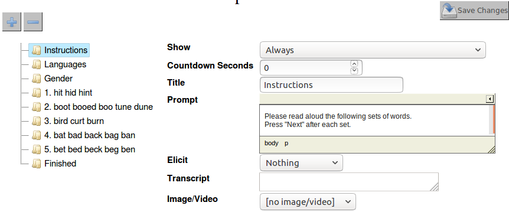

3. Uploading Data
In this exercise you will:
- Upload a transcript manually
- Upload many transcripts at once using the batch uploader
- Import participant data from a CSV file
- Define a speech elicitation task for gathering data
After this you will have a small corpus in your LaBB-CAT database.
Before you start, download and unzip QuakeStories.zip so you've got the demonstration data for uploading to your corpus.
Manual Upload
- In LaBB-CAT, click the transcripts option in the menu.
- Press the Upload Transcript icon at the bottom.
- Press the left-hand Choose File button and select the file in the “QuakeStories” folder called:
“BR178LK_MargaretSpencer.eaf”
When you select a file, a new row of Choose File buttons will appear below the first. This is for adding more transcripts in the ‘episode’. An ‘episode’ is a set of transcripts that belong together because they were recorded during the same session. In our case, each recording session has only one recording. - Next to Media on the first row, click Choose File
- Each transcript has an audio file and a video file, and you want to upload both.
Click the file called “BR178LK_MargaretSpencer.mp4”, then hold down the ShiftShift key on your keyboard and click the file called “BR178LK_MargaretSpencer.wav”. Then click Open. - Ensure the Corpus option is QB
- Ensure the Type option is interview
- Click Upload
Each ELAN transcript has a number of Tiers defined in it:
- one for the participant's utterances,
- another for an ‘interviewer’ if there is one,
- one for noise annotations,
- one for transcriber comments, and
- one for topic annotations.
Each tier must be mapped to a LaBB-CAT annotation layer.
- LaBB-CAT has analysed the structure of the ELAN transcript and pre-selected some default options for layer mappings. For the demo data, these defaults are correct, so you needn’t change anything.
Click Next to continue.
This will display a page listing all the speakers in the transcript, so you can select which one is the ‘main participant’, which is the speaker selected by default for searches and other processing. - Ensure that BR178LK_MargaretSpencer is ticked, and the interviewer is not ticked, and click Set Main Participants.
This will display a page with the name of transcript you uploaded, with an edit meta-data link, and a progress bar (which may have already finished). - Click edit meta data
This will display the attributes for the transcript. - Check that you remembered to set Type to interview. If not, you can fix that on this page, and press the Save button that appears when you make changes.
- Below the transcript attributes is a Participants link – click it.
This will list both participants in the recording, the main participant, and the interviewer. - Click BR178LK_MargaretSpencer.
This will display the participant attributes we defined in an earlier exercise. - BR178LK_MargaretSpencer is an ‘English’-speaking ‘female’ who is between ‘66 and 75 years’ old, who grew up in ‘Christchurch’, in the ‘North Canterbury’ region of ’New Zealand'.
Set her attributes to reflect that, and click Save. - Below the participant attributes, there is a Transcripts link – click it.
You will see a list of transcripts that the speaker appears in (in this case, only one). - Each has various icons on the right; hover your mouse over each icon, and a ‘tip’ will appear that describes what the link does.
- Click name of the BR178LK_MargaretSpencer.eaf transcript.
You will now see LaBB-CAT's ‘interactive transcript’ page for the transcript.
At the top there is a heading, a list of speakers, and then below this, the lines from the transcript, their speakers in the margin. This includes the words the participants utter, and also any noises, comments, and other events that were put in the transcript in ELAN.
- In the top right corner are some playback controls; click the play button. You will see a shaded rectangle following the participant's speech.
- Try the other controls to see what they do.
- Now click on any word in the transcript.
You will see a menu appear, with options for the ‘Utterance’ (the line), and the word. - Click the play option in the menu to see what it does.
- Click on the formats link under the title.
You will see a menu, which includes various formats for exporting the transcript. - Select ‘Plain Text Document’
- Save the resulting file on your desktop, and then open it.
You will see the transcript in plain-text form. - Click the formats link, and select the ‘Praat Text Grid’ option.
- Save the resulting file on your desktop, and then open it with Praat.
You will see that the TextGrid has various tiers, two for full utterances (one for each speaker), and two for individual words (one for each speaker).
(You will see that each individual word has a ‘default’ alignment - i.e. the words are evenly spread out during the duration of the line they’re in. In a later exercise we will look at ways to make these word alignments actually line up with the words in the audio signal.)
Batch Upload
If you already have a collection of transcripts and media files (which we have for these exercises), and they are systematically organized (which they are), you may be able to save some manual uploading work by uploading them using the ‘batch upload’ utility.
- In LaBB-CAT, click the transcripts option in the menu.
- Press the Upload Transcript Batch icon at the bottom.
This shows a window with a large blank area in the middle with various buttons above it. - Open Windows Explorer or Finder, and navigate to the LaBB-CAT Workshop data folder.
- Drag the folder called “QuakeStories”, and drop it on to LaBB-CAT, on to the blank area below the buttons.
The previously blank area will contain a list of transcripts. Each transcript should have a value filled in for each column - Transcript, Media, Corpus, and Episode. - Most of the transcripts are monologues, so set Type to monologue on the top left.
- One of the transcript is highlighted in orange, and the Status says “Already exists” - this is the transcript you manually uploaded. We don’t need to upload it again, so remove it from the list by using the x button on the right hand side of that row.
- Click the Upload button above the list.
You will see that in the Status column, the text changes to “Uploading…” for the first transcript. The progress bar progresses, and once it's complete, the next transcript changes to “Transferring”, and so on.
While the files are uploading, click  the online help link next to the upload transcript batch link you clicked above and read the conditions that must be met in order to use the batch uploader.
the online help link next to the upload transcript batch link you clicked above and read the conditions that must be met in order to use the batch uploader.
- Once the uploader is finished, you will receive a CSV report file that lists the files you uploaded and their upload status. (If there had been any problems with the upload, the resulting error messages would be included in this report for following up.)
- You can verify that all the transcripts are there by clicking the transcripts option on the menu in LaBB-CAT.
You should see a list of twenty transcripts. - Use the Transcript box to find
UC013AM_Dom.eaf(You can type just part of the name if you like) - Click the Attributes icon for UC013AM_Dom.eaf (the one with the spanner/wrench 🔧 on it).
- Change Transcript type to interview and click Save.
- Similarly, the following transcripts are interviews, so change their type accordingly
- UC215YW_DanielaMaoate-Cox.eaf
- UC226AD.eaf
Participant Data Import
The transcripts are now in the database, but the meta-data for the participants hasn't been set yet (because it’s not contained in the ELAN files). We could manually add this for each speaker, but fortunately we have it stored in a spreadsheet (actually, a CSV text file) that we can upload in one go.
- In LaBB-CAT, select the participants option on the menu.
- Press the Upload Participant Data icon at the bottom.
- Press Choose File, and select the file in the LaBB-CAT Exercises data folder called participants.csv
- Press Upload
- You will now see a list of the columns from the spreadsheet.
Firstly, ensure that the Participant identity column is set to name. This ensures that the “name” column in the spreadsheet will be used to match names of participants in the LaBB-CAT database. - Below that is listed each column from the spreadsheet, with an arrow pointing to a dropdown box. The box contains various options, including each of the participant attributes set up in LaBB-CAT, an ignore option, and create a new attribute option.
Most likely, the correct options are already selected, as we’ve already set up the correct participant attributes, but just check that they are as follows:
- The CSV column name: → ignore because it's the Participant Identity Column identified above
- The CSV column gender: → the Gender LaBB-CAT attribute
- The CSV column ageCategory: → the Age LaBB-CAT attribute
- The CSV column ethnicity: → the Ethnicity LaBB-CAT attribute
- The CSV column grewUup: → the grewUp LaBB-CAT attribute
- The CSV column grewUpRegion: → the grewUpRegion LaBB-CAT attribute
- The CSV column grewUpTown: → the grewUpTown LaBB-CAT attribute
- The CSV column languagesSpoken: → the languagesSpoken LaBB-CAT attribute
- Click import.
You should see a page with information about the import, including the columns that were ignored, and the number of participants that were added.
To check the participant attributes really are now set:
- Click the participants option on the menu. You will see a list of speakers, and page links at the bottom.
The page also includes participant attribute values where they are known.
You can also filter the list by these values, using the column headings above the list:
- Under Gender, select the F option.
The page now lists only those with ‘Female’ set for the Gender attribute.
Elicitation Tasks
LaBB-CAT can also make recordings of speech directly from the browser.
Let’s suppose you want to record a number of participants reading lists of words. You can define an ‘Elicitation Task’ that includes a series of steps, one for each set of words you want participants to read.
First we’re going to create a corpus to receive our recordings, and a transcript type to mark the recordings as word lists …
- In LaBB-CAT, select the corpora option on the menu.
- Add a corpus called CC with a description Canterbury Corpus.
- Click the transcript types option on the menu.
- Add a transcript type called wordlist.
Now we’ll create the elicitation task, which defines what prompts and texts the participant sees during the task.
- Click the elicitation tasks option on the menu. The page you see is a list of elicitation tasks defined, which is currently empty.
- Fill in the blank form with the following details:
- ID:
nze-wordlist - description:
New Zealand English Word List - corpus: CC (the corpus you just created)
- transcript type: wordlist (the transcript type you just created)
- preamble: “In this task your speech will be recorded. Please ensure you’re in a quiet place.”
This is the first text the participant sees when they access the task, before giving consent or going through the steps. - consent: “I give consent for the use of my speech data for this research.”
This is the text of the participant's consent for their participation and the use of their data. Before starting the task steps, they must 'sign' this consent by typing their name in a box at the bottom. The text, with their name and the date incorporated, with be made into a PDF file which is uploaded with their recordings, and is made available for them to download.
- ID:
For both the preamble and the consent form, you can format the text with bold, italic, and underlined text, etc. by using the controls above the text area.
Check the online help on this page for further details about settings and important information about browser limitations.
- Press New to add the task.
- Press Define Steps.
On this page you are going to add steps for the task. The first step, called “Welcome”, has already been added, and we’ll use it for giving the participant some detailed instructions about what follows. We'll add a series of steps after the “Welcome” step, one for each group of words we want the participant to read.
The form you can see defines the details of the first “Welcome” step.
Check the online help on this page for further details about this page and the options on it.Close the online help page to return to the “define elicitation steps” page.
Fill in the following details:
- Show: Always
- Countdown Seconds: 0
- Title: Instructions
- Prompt: Please read aloud the following sets of words. Press “Next” after each set.
- Elicit: Nothing
- Transcript: (leave this box blank)
- Image/Video: no image/video
Next we’ll define what demographic information we will ask each participant before they start recording. In this case, we will ask for their gender and what languages they speak.
- Click the button to add a new step.
- Fill in the following details:
- Show: Always
- Countdown Seconds: 0
- Title: Languages
- Prompt: What languages do you speak?
- Elicit: Attribute Value
- Attribute: participant_languagesSpoken
- Image/Video: no image/video
- Click the button to add a new step
- Fill in the following details:
- Show: Always
- Countdown Seconds: 0
- Title: Gender
- Prompt: What is your gender?
- Elicit: Attribute Value
- Attribute: participant_gender
- Image/Video: no image/video
Now we can defined some prompts for them to read aloud.
- Click the button to add a new step
- Fill in the following details:
- Show: Always
- Countdown Seconds: 0
- Title: (leave this box blank)
- Prompt: Please read the following aloud:
- Elicit: Audio
- Transcript:
1. hit hid hint - Max Seconds: 30
- Next Button: Shown
- Rerecord Button: Hidden
- Image/Video: no image/video
- Click the button to add a new step
- Fill in the same details as the previous step, except:
Transcript:2. boot booed boo tune dune - Add a new step for Transcript:
3. bird curt burn - Add a new step for Transcript:
4. bat bad back bag ban - Add a new step for Transcript:
5. bet bed beck beg ben - Add one last step, with the following details:
- Show: Always
- Countdown Seconds: 0
- Title: Finished
- Prompt: Thanks for your participation!
- Elicit: Nothing
- Transcript: (leave this box blank)
- Image/Video: no image/video
This last step is what is displayed to the participant when they’ve finished all the steps.
- Click Save Changes

Your task is almost ready. We just need to define which options for gender they can see.
- Select the elicitation tasks option on the menu.
- Press Participant Attributes.
- Select Options
This displays a list of the gender options that are visible to the participant. As you can see it's currently empty. In this case, we want to display all options for them to select. - Press Add All
You will see that all the options (M,F, and ‘(not specified)’) have been added to the list. If you wanted to, you could edit the “description” of the individual items (e.g. translate them to another language if your participants don’t speech English), or delete options you don’t want them to be able to select. - Press the Delete button next to the ‘(not specified)’ option, and click OK to confirm.
- Press Save Changes.
Your task is now fully defined and ready to go.
Now you’re going to run through the elicitation task yourself …
- Select the elicitation tasks option on the menu.
- Press the Elicitation Task button on the bottom right.
You should see a page that displays the task’s ‘preamble’ that you defined earlier. - Click Next.
You should see a page that displays the task’s consent form that you defined earlier, with a box to enter your name in order to ‘sign’ the consent. - Enter your name and click Next.
You will be given the chance to save your copy of the consent form. - Save the consent form and open it to check the contents.
- Close the consent form to return to the task.
You will be asked for the demographic details you defined earlier.
- Fill in your languages and press Next.
- Fill in your gender and press Next.
You should see a page with some text about enabling your microphone.
If you don’t, and instead see a message about your browser not being supported, this means that your web browser doesn’t support recording sound. In this case, copy the address of the page at the top, and paste it into another browser (e.g. Google Chrome or Mozilla Firefox).
Once you've enabled your browser for access to your microphone, the task steps will begin, and you should follow the instructions, reading the prompts aloud and clicking Next after each group of words.
Each time somebody performs the task, they're assigned a unique Participant ID, which is linked to their demographic data and the recordings.
- Press the Back button on your browser to return to the define elicitation tasks page in LaBB-CAT.
- Press the participants option on the menu.
LaBB-CAT remembers the last filters you used, so you may need to clear any filters you had previously applied.
For example, if the last time you accessed the participants page, you selected the F gender option to show only female participants, that filter may still be active.
You can press the ⌫ button at the top, to the right of the page filters, to clear all filters.
- Under the Corpus heading, select the CC option.
You will see one participant; the one you just created by doing the task. - Press the participant ID to open their attributes page, and check that the demographic information you entered has been saved.
- Click the participant ID to open their attributes page, and check You will see that the participant has five transcripts, one for each of the task steps where audio was recorded.
- Press the Transcripts link at the bottom to list the transcripts.
- Open the first transcript.
You will see that the transcript starts with a comment, which is the prompt text you were shown during the step, and that the transcript contains one utterance. - Play the audio to ensure it was recorded correctly.
(If the last transcript you looked at had video, you may need to tick the checkbox next to the “wav” option in the top right corner, in order to select audio for playback.) - On the right hand edge of the page, about halfway down, there is a green arrow icon .
Press it.
You will see that this opens the next transcript in the ‘episode’ that you just recorded- i.e. the next set of words you read out. The green arrows on the left and the right of the screen allow you to navigate between the different transcripts in the same recording episode.
Although these ‘task step’ transcripts are very short, they behave the same as any other transcript; they can be exported, annotated, searched, etc.
You now have a small database with a number of speakers in it, so we can start creating some annotations and doing some searches ...